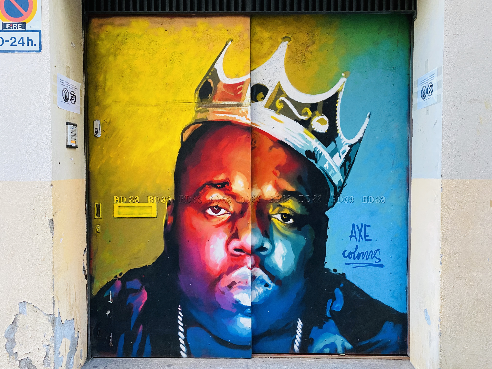
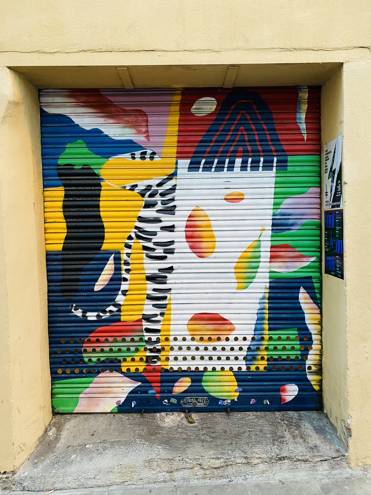
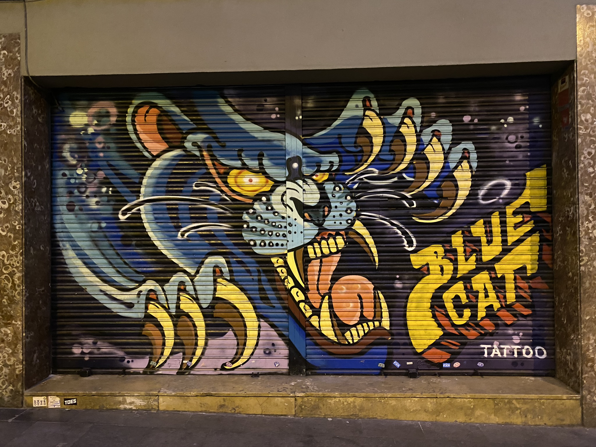

It was a Friday evening.
Ailin, Mireia and I decided to go for a walk in the Gracia Neighborhood.
The neighborhood is famous for its squares and tiny streets, that have a particular charm and atmosphere.
As we arrived, we started to feel it too. Suddenly you have the feeling of being somewhere else, not Barcelona but Barcelona. It’s perfect for those who want something different.
We walked for some time and admired the tiny streets full of arty boutiques that stand next to traditional Spanish stores and the squares where people drink outside until the early hours.
As the weather was perfect, we decided to sit at one of the Vila de Gracia Square terase and talk about our project.The place was full of families and young people that were enjoying their time together, just like us. Even the small talk with the waiter was funny.
We talked about the project, bringing new ideas, making funny breaks and just getting to know each other better.
Last updated 5 mins ago
An symbolistic graffiti that shows the love for the nature and how it can change your visions.
36 Fraternitat Street
"Please don't hate me because I'm beautiful."
Notorious B.I.G.
A better way to discover a city it's when you have a purpose for your walk.
1 Robi Street
I’m glad I saw Bill Murray, Bill ******* Murray!